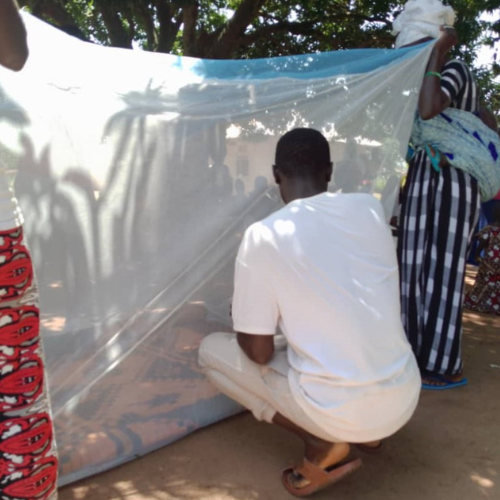
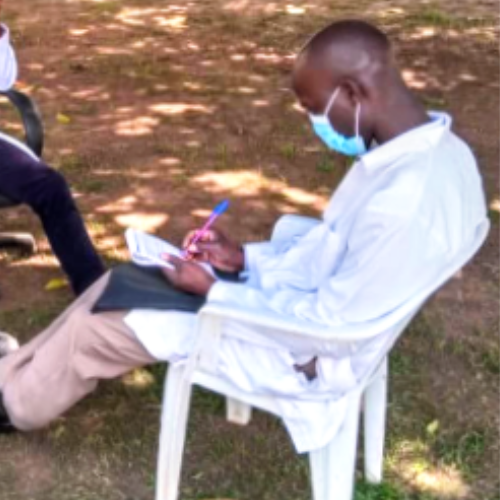
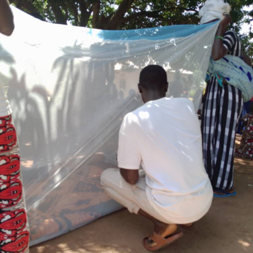
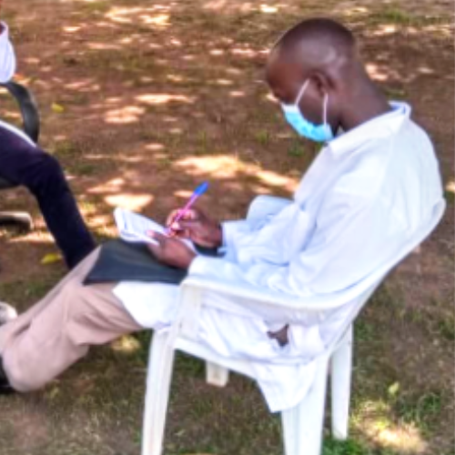

Charity Work: Extending a Helping Hand.
Charity is at the heart of what we do.
Our charity work focuses on reaching out to those in need, providing them with the essentials for a dignified life.
Whether it’s distributing food and clothing, building shelters, or offering emergency relief during disasters, we are there to support and uplift.
Our volunteers are the backbone of our charity initiatives, working selflessly to bring smiles to the faces of those we help.
Through our efforts, we aim to restore hope and provide a sense of security to vulnerable individuals and families.